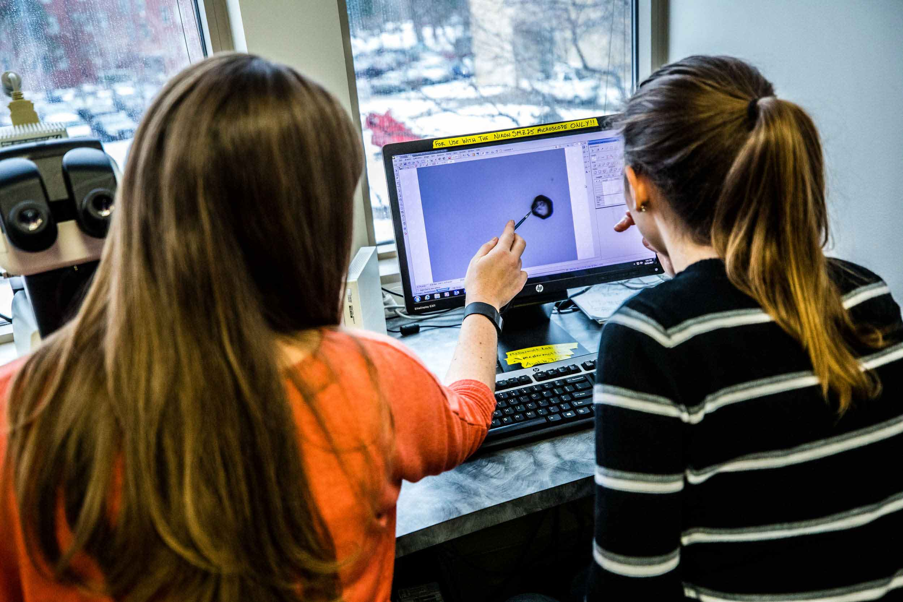

The University of St. Thomas Computer Science Club (UST CS Club) is always welcoming new members. In order to join, you must be a current student at UST and have access to Tommie Link. When you are ready, log into the Tommie Link Computer Science Club page. Once you are on the page, locate and click the JOIN button to begin the process. After you click the JOIN button, your membership status will remain pending until the club president receives the notification and approves your membership request. After approval, you will begin receiving club related emails and regular updates on upcoming meetings, events, and projects. If you have any questions about the club and would like to speak with one of the officers, you can find their contact information on the Tommie Link Computer Science Club page under the Officers section.
